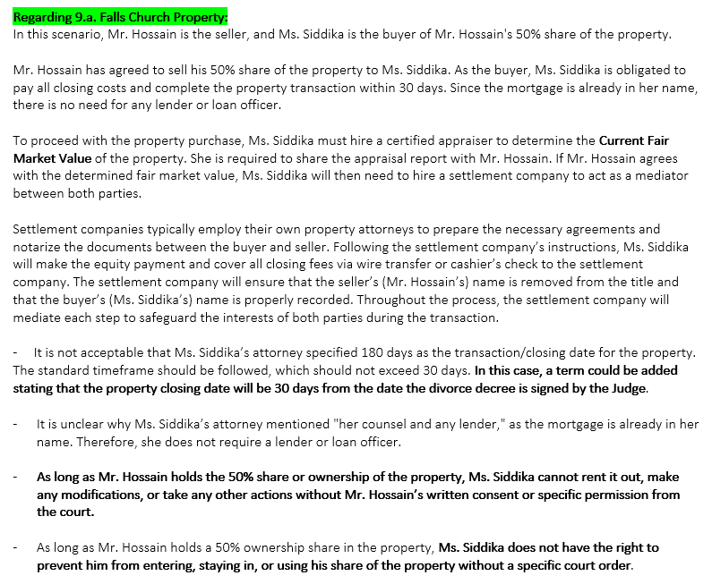
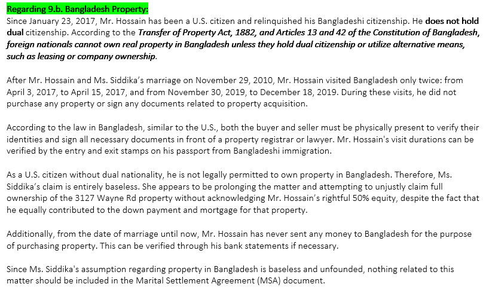
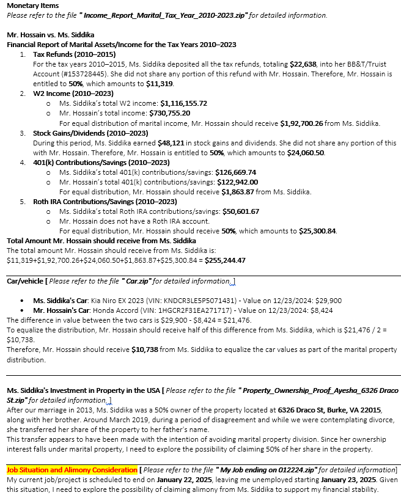
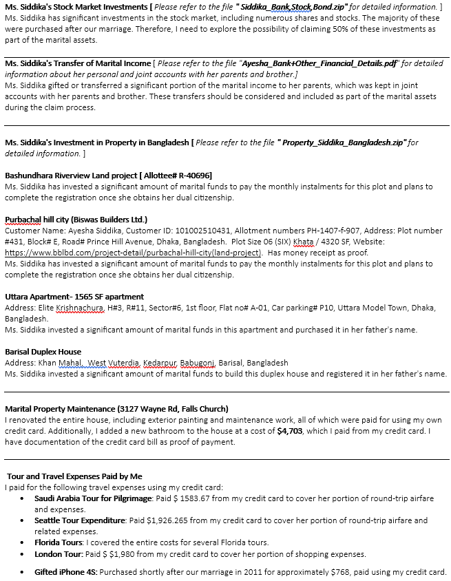

Reply of MSA which updated by Bill Lyden / William J. Lyden | Locke & Lyden PLLC


+++++++++++++++++++++++++++++++++++++++++++++++++++++++++++++++++++++++++++++++++++++++++++++++++++
Since you are not attempting to resolve the issue and are instead trying to prolong it, I have no other option but to retain a highly-rated contested attorney and forward the matter to court for a hearing. In that case, according to Virginia law, I will have no alternative but to claim 50% of all our marital income and assets. I have an appointment with a highly-rated attorney this coming Tuesday, and I hope they will be able to file the 50% claim and divorce case with the court very soon.
My current job/project is scheduled to end on January 22, 2025, which will leave me unemployed starting January 23, 2025. Given this situation, I will have no other option but to claim alimony from Ms. Siddika to ensure my financial stability.
Here is a list of a few claims. Hopefully, the list will grow before filing in court.


+++++++++++++++++++++++++++++++++++++++++++++++++++++++++++++++++++++++++++++++++++++++++++++++++++
I have modified Section 9 of the MSA (highlighted in red text), which was created by Bill Lyden. Please review the updated MSA, and if you find it acceptable, kindly inform me that you are ready to sign it. Once I receive your confirmation, I will postpone proceeding with the dispute and court procedures.
Click here to view the updated MSA.